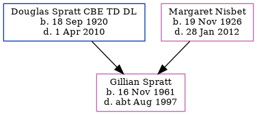

Gillian Patricia Spratt 1961 - c1997
[ Home ] | [ Calendar ] | [ Surnames Index ] | [ Family History ]The daughter of Douglas Spratt CBE TD DL and Margaret Nisbet, Gillian Spratt, the third cousin on the father's side of Nigel Horne, was born in Edinburgh, Midlothian, Scotland on Nov 16, 19611.
She died c. Aug 1997 in Lambeth, London, England1.
Parents
- Douglas Norman was born on Sep 18, 1920
- Margaret Knox Gowans was born on Nov 19, 1926
Citations
- England & Wales deaths 1837-2007 - Findmypast
Media
England & Wales deaths 1837-2007 - BMD/D/1997/8/82223090
Family Tree
Generated by Ged2Site. Last updated on Jul 20, 2025